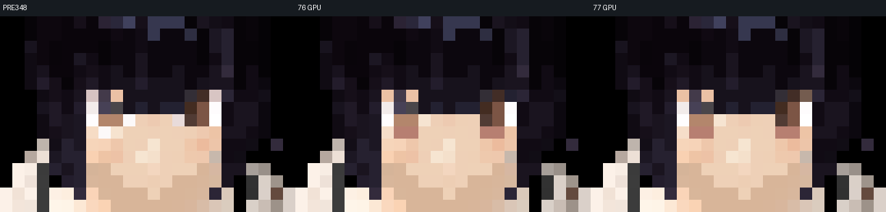
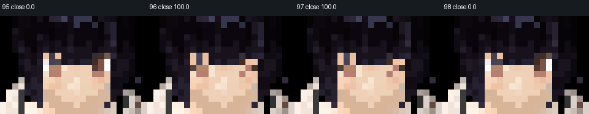
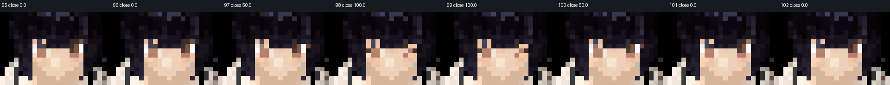
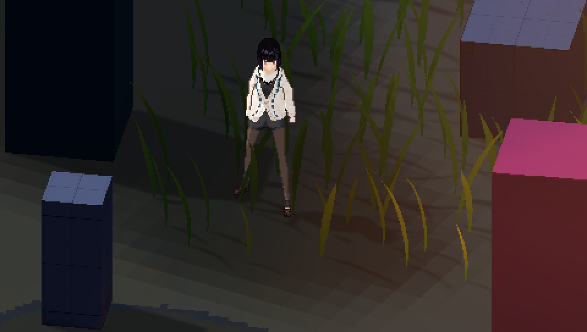

실제 제품 compute와 새 helper에 적용했습니다. 기존 사용자 변경이 섞인 main compute 전체는 stage하지 않습니다. 새 helper와 분리 가능한 선언 hunk만 실제 경로에 보존하고, 전체 정확한 작업 소스/패치를 여기에 남깁니다.
원인: 외부 머리 가림을 뺀 native 면적이 0.510→0.449로 내려가 반올림 예산이1→0이 됩니다. 별도로 colour-competition rank가 같은 source upper 경계의 반대 끝을 고릅니다. 원본 연결 upper 영역의 intrinsic 면적과 현재 실제 가시성, rest-source 중심 위치를 분리했습니다. 고정 최소 pixel 수/화면 RGB history/다른 family 색으로 채우기는 사용하지 않습니다.


이전8프레임의 반감김 검증과 아래 최종4프레임은 다른 sourceId입니다. 같은 프레임의76/77 compute 비교만 동일 입력 대조입니다.

열림→반감김→감김→반감김→재열림. iris8→5→0→5→8이며 실제 변형 mesh와 GPU 표본의 대응을 검사했습니다. Close API 값만을 실제 baked 상태라고 가정하지 않았습니다.
모든 눈 모양을 공동 설계한 allocator가 아닙니다. rest component의 중심을 기준으로 native 상안검의 흔들림만 줄입니다. 곡선 전체/소수 좌표 움직임/긴 회전·걷기·모든 모델의 미관 성공은 미검증입니다. native 원색 자체가 밝은 셀은 그대로이며 검은 선을 새로 그리지 않았습니다. 좁은4배 표본의 가시성/반올림 경계는 남습니다. hot sharedMesh 교체는 기존 Initialise부터 미지원이며 새 renderer/재초기화 수명만 검사했습니다.
최종 Edit 복귀, 미저장29 내용/옵션/time/pipeline/global 복원, 소유 buffer만 해제했습니다. 비dirty ProjectSettings AssetImporter 한 객체는 종료 후 unavailable이며 전체 native 상태 동등성을 주장하지 않습니다. 내부 allocated 증가를 물리 RAM/누수 확정으로 취급하지 않습니다.

최종4 결과 · 이전8 결과 · 소유권/무효화 · GPU7검사 · 전체 작업 패치 · portable 실제 입력 검사